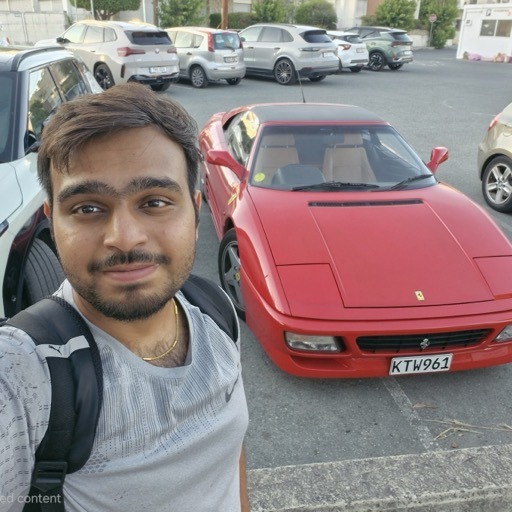

K S Nithurshen
@Nithurshen
B.Tech Computer Science and Engineering undergraduate at Shiv Nadar University, researching GPU-accelerated systems and visual computing, and an active open-source contributor.
Research Interests
- Systems — GPU Programming, Parallel & Sparse Numerical Computing, High-Performance Computing, Compilers & Code Generation, Operating Systems
- Visual Computing — Computer Vision, Neural Rendering (Gaussian Splatting, NeRF), Deep Learning, Image Processing, Computer Graphics
Elsewhere
Education
-
Shiv Nadar University Delhi-NCR, India
Bachelor of Technology in Computer Science and Engineering 2024 – 2028
Current CGPA: 9.79 / 10.0
Course Work:
- AI & Data: Machine Learning, Large Language Models, Artificial Intelligence†, Information Retrieval†
- Systems & Core: Operating Systems, Computer Organization & Architecture, Digital Electronics, Database Systems, Cloud Computing, OOP, Distributed Systems†
- Theory & Math: Data Structures & Algorithms, Applied Linear Algebra, Multivariate Calculus, Probability & Statistics, Discrete Mathematics
-
Maharishi Vidya Mandir Senior Secondary School Chennai, India
Class XII – Central Board of Secondary Education (CBSE) 2022 – 2024
Percentage: 93.2% (466/500)
-
The Indian Public School Karur, India
Class X – Central Board of Secondary Education (CBSE) 2009 – 2022
Percentage: 93.6% (468/500)
Honors & Awards
- Dean’s List, Shiv Nadar University (Monsoon 2024, Spring 2025, Monsoon 2025, Spring 2026) – awarded for ranking in the Top 10% of the department by academic merit/CGPA.
Publications
-
SpineContextResUNet: Efficient 3D ResUNet for Spine CT Segmentation August 2025 – March 2026
First Author | Accepted at IEEE CBMS 2026 (Limassol, Cyprus) [arXiv] | [GitHub]
Advisor: Dr. Saurabh J. Shigwan | Shiv Nadar University
- Architected a ~1.7M parameter 3D ResUNet with a parallel ASPP Context Block to capture 3D spatial context.
- Achieved 88.17% (CTSpine1K) and 88.13% (VerSe2020) Dice, outperforming a parameter-matched SwinUNETR baseline by ~15% in limited-data 3D regimes.
- Engineered Gaussian-weighted sliding inference for low-powered and edge platforms where heavy nnU-Nets encounter OOM errors and validated focus using Grad-CAM.
Talks & Presentations
Oral Presentation, SpineContextResUNet | 39th IEEE Int. Symposium on Computer-Based Medical Systems (CBMS 2026), Limassol, Cyprus June 2026
Experience
-
Multi-Domain Image Restoration via Self-Supervised Domain Generalization August 2026 – Present
Undergraduate Researcher | Dept. of CSE, Shiv Nadar University
Advisor: Dr. Snehasis Mukherjee
- Architecting an unpaired generative framework based on CycleGAN with Barlow Twins feature decorrelation and Alignment-Uniformity regularization to prevent dimensional collapse and artificial texture hallucinations.
- Engineering custom CUDA kernels for fused batch cross-correlation matrix computation (ℒBT) and parallel inter-domain gradient projection (gi⊤gj), slashing meta-optimization latency.
- Integrating Gradient-Guided Annealing (GGA) and Arithmetic Meta-Optimization (GA-META) to resolve conflicting update trajectories and preserve restoration fidelity across diverse disturbance domains.
- Evaluating out-of-distribution (OOD) restoration benchmarks across heterogeneous degradation profiles, including atmospheric haze/rain (Rain100, RESIDE), sensor noise (SIDD), and Monte Carlo rendering artifacts.
-
Google Summer of Code (GSoC 2026) – EROFS Filesystem May 2026 – September 2026
Open Source Developer / Contributor [Project Details]
Mentors: Xiang Gao, Yifan Zhao, Chunhai Guo
- Architected a producer-consumer decompression pipeline in
fsck.erofsusing a workqueue and dynamic pcluster batching, eliminating thread spinning and decoupling CPU-bound decompression from synchronous I/O. - Integrated concurrent directory traversal with worker thread pools, deterministic error propagation, and memory-bounded kernel dirty page write throttling to eliminate userspace memory bloat.
- Outperformed single-threaded baselines across all cluster sizes (4K–64K), boosting multi-core extraction speeds by 70.2% for LZMA, 26.9% for LZ4HC, and 20.8% for ZSTD.
- Architected a producer-consumer decompression pipeline in
-
3D Score-Based Diffusion for Amorphous Carbon Structure Synthesis May 2026 – August 2026
Research Intern | Dept. of Materials Science & Engineering, IIT Gandhinagar
Advisor: Dr. Raghavan Ranganathan
- Built and trained a 3D score-based diffusion model (GNN score function) on 512-atom ab-initio melt-quench simulation datasets to automate atomic coordinate generation for the host lab’s materials research pipeline.
- Developed custom CUDA kernels to accelerate 3D periodic neighbor-list construction and score evaluation, reducing diffusion training and sampling latency.
- Synthesized critical research datasets comprising 400 unique structures per density across 0.9–3.5 g/cm3, scaling generation across 13 system sizes from 128 up to 16,384 atoms.
- Achieved zero-shot generation across unobserved, interpolated target densities; confirmed topological realism and physical consistency via Radial Distribution Functions (RDF), bond angle distributions, and coordination numbers.
Open Source Contributions
-
erofs-utils, Apache DataFusion, Blender, pandas, scikit-learn, Mesa & aeon [GitHub] | [Blender]
- Apache DataFusion (Rust): Implemented Substrait consumer support translating
like_match/like_imatchexpressions from the Substrait plan IR into DataFusion logical plans; addedelapsed_computemetric tracking for CSV scan operators. - erofs-utils (C): Six patches merged upstream – use-after-free hardening in
erofs_destroy_workqueuethread teardown, QPL job-initialization and S3 object-iterator memory leaks, and undefined bit-shift behavior in zstddict_size. - Blender (C/C++): Merged fixes for a Python API crash when setting
NodeSocket.bl_idnameand a Geometry Nodes Points-to-Volume positional offset regression. - Python scientific stack: Merged fixes across pandas (
interval_rangedtype inference,Series.info), scikit-learn (OneHotEncoderhandle_unknown), Mesa (exception hierarchy, emitter API), and aeon (ElasticEnsembles).
- Apache DataFusion (Rust): Implemented Substrait consumer support translating
Projects
-
Rigel: Custom CUDA Differentiable 3D Gaussian Splatting Engine [GitHub]
- Built an end-to-end 3DGS renderer and trainer from scratch in CUDA C++, implementing CUB radix depth-sorting, cooperative shared-memory tile rasterization, and analytical EWA backward kernels without autograd.
- Engineered a fused 2-layer appearance MLP kernel alongside a zero-copy headless Vulkan interop path via POSIX opaque file descriptor memory sharing.
-
Irena: GPU path tracer in C++ and OpenCL with Vulkan interop and BVH acceleration [GitHub]
- Built a path tracer using OpenCL for compute and Vulkan for graphics via explicit API interoperability.
- Implemented a Bounding Volume Hierarchy (BVH) in C++ to accelerate ray-triangle intersections and scene traversal.
- Implemented an asset pipeline to load 3D geometries and materials, successfully rendering benchmarks like Cornell Box.
-
Avior & Avior-CUDA: High-Performance Image Denoisers [GitHub (avior)] | [GitHub (avior-cuda)]
- Developed a zero-dependency C++17 image denoiser from scratch, engineering custom Deflate/Inflate codecs and chunk-level PNG parsing.
- Implemented an O(1) fast NLM filter via displacement-parallel summed-area tables over a QoS-pinned CPU thread pool.
- Architected a direct CUDA C++ port, exploiting shared-memory coalescing and warp-level reductions to maximize streaming multiprocessor throughput.
Technical Skills
- Languages: C, C++, Python, Rust, CUDA C/C++, Bash, SQL, GLSL
- GPU & Parallel Systems: CUDA, OpenCL, Metal, POSIX threads, Linux Kernel/VFS APIs
- Graphics & Vision: OpenCV, TorchVision, 3D Gaussian Splatting, NeRF, Vulkan, OpenGL, BVH & ray tracing
- Deep Learning: PyTorch, PyTorch Geometric, TensorRT, ONNX Runtime, scikit-learn
- Profiling & Tools: Nsight Compute/Systems, compute-sanitizer, perf, GDB, Valgrind, AddressSanitizer, Flamegraphs, CMake, Make, Docker, SLURM, Git
Positions of Responsibility
-
Teaching Assistant | Discrete Mathematics August 2026 – Present
Supervisor: Dr. Arnab Ganguly | Shiv Nadar University
- Conduct weekly tutorial sessions on set theory, graph theory, combinatorics, and formal mathematical proofs.
- Assist course instructors with grading problem sets, hold office hours, and clarify student queries on the subject.
-
AI/ML Team Lead | ACM Student Chapter, Shiv Nadar University September 2025 – Present
- Spearheaded the core team in architecting and training a custom text-to-image diffusion model in PyTorch from scratch.
- Instructed a 10-week cohort of 150+ undergraduate students on deep learning fundamentals and practical workflows.
- Organized competitive machine learning hackathons and hands-on workshops to drive chapter engagement.
References
- Dr. Arnab Ganguly | Assoc. Prof., Shiv Nadar University
- Dr. Raghavan Ranganathan | Assoc. Prof., IIT Gandhinagar
- Dr. Saurabh J. Shigwan | Asst. Prof., Shiv Nadar University
- Dr. Snehasis Mukherjee | Assoc. Prof., Shiv Nadar University